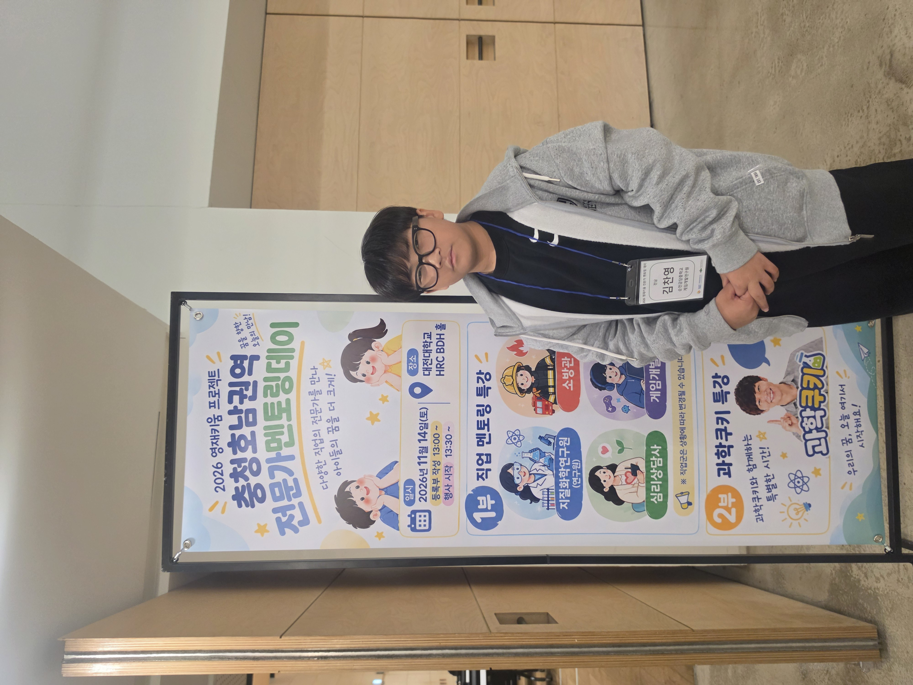
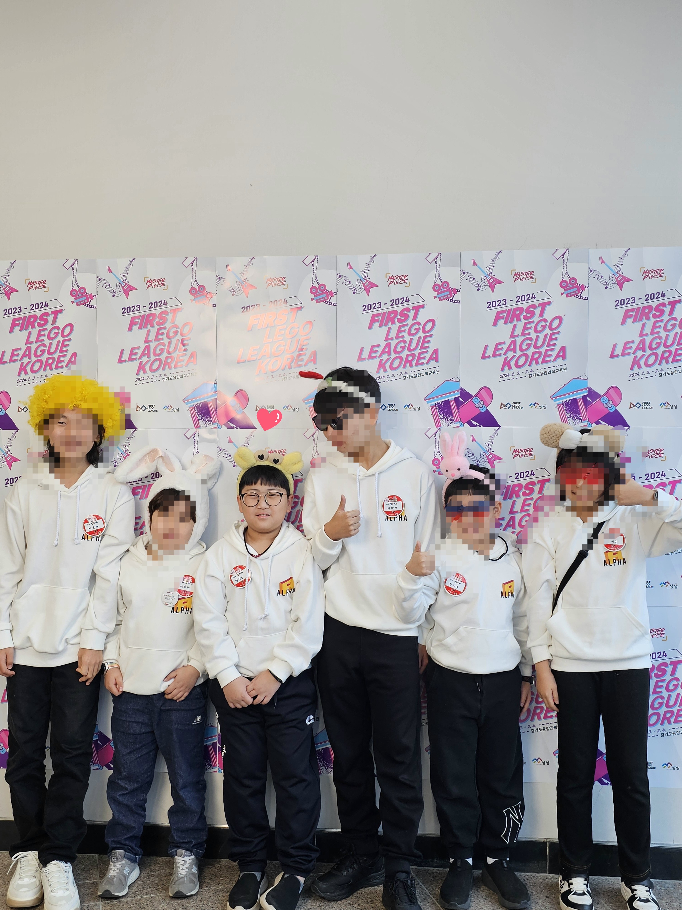
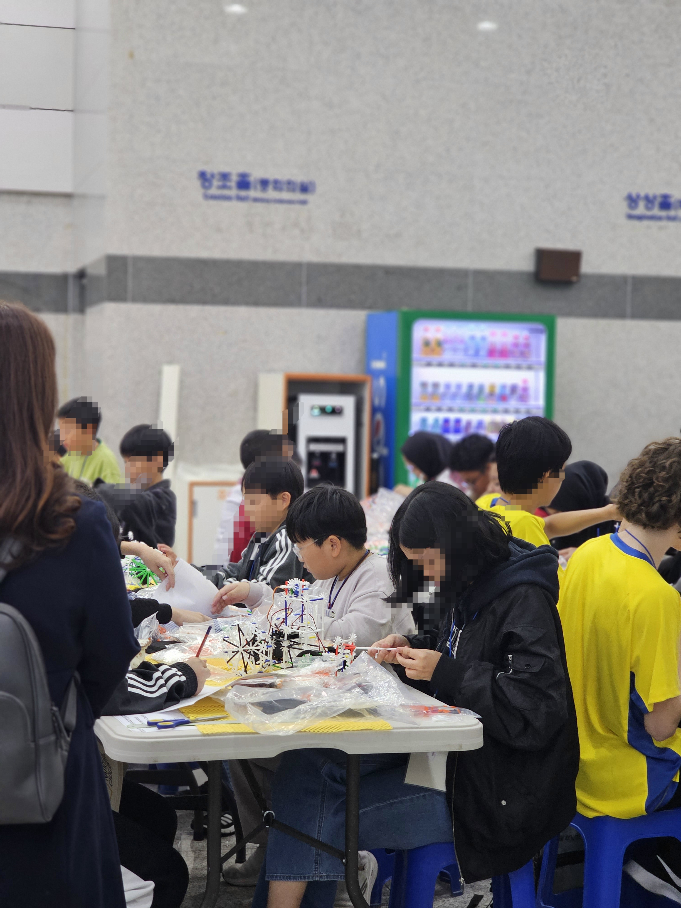
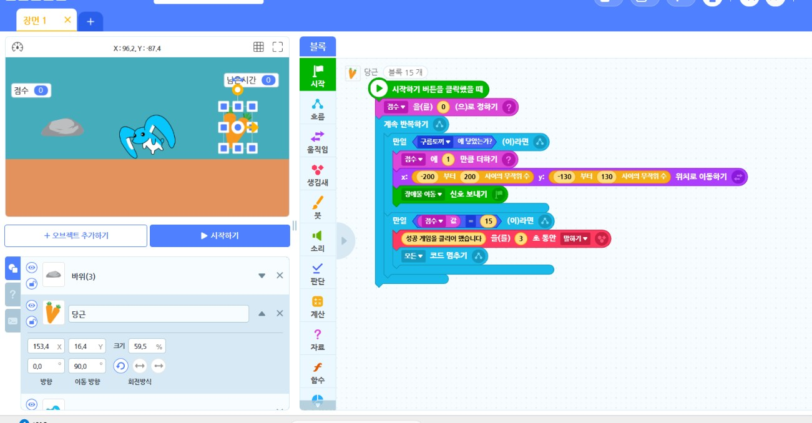
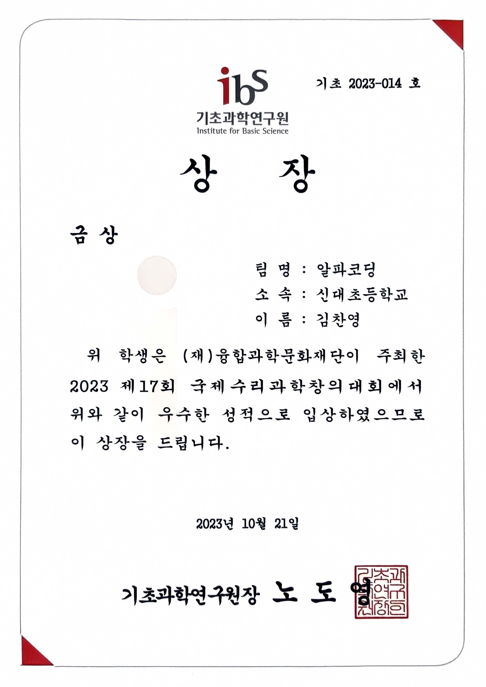
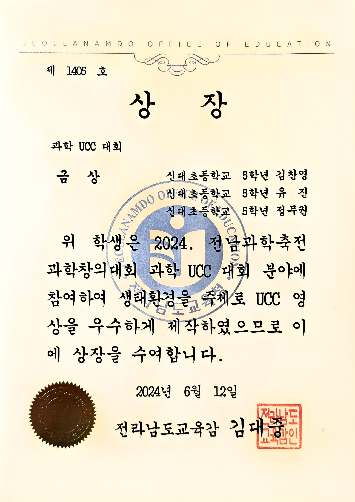
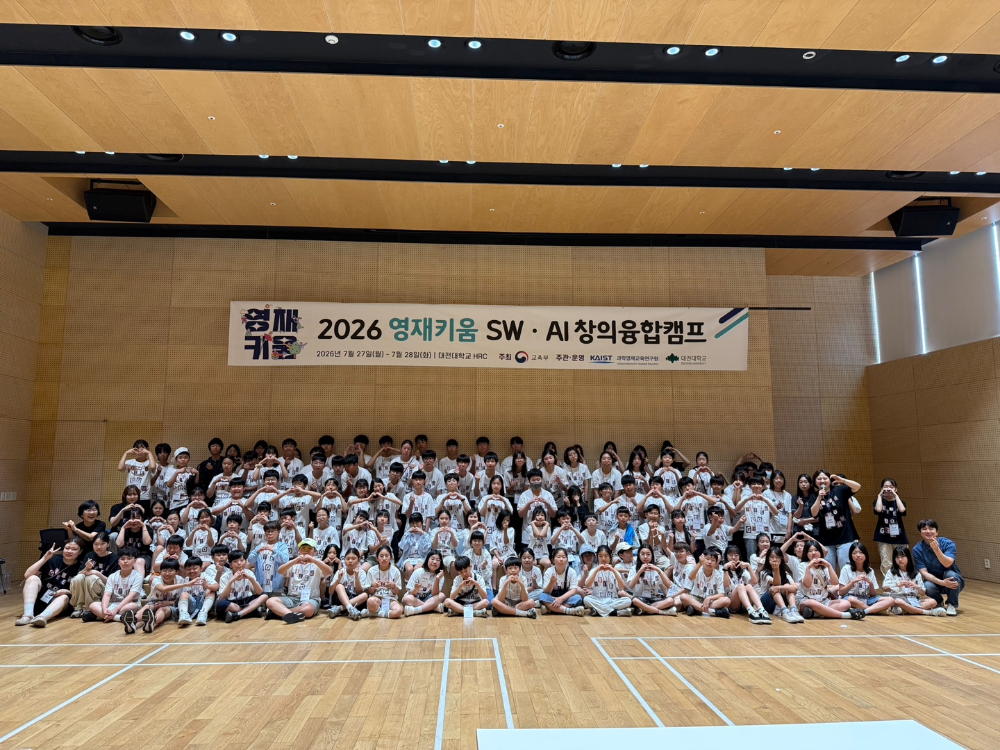
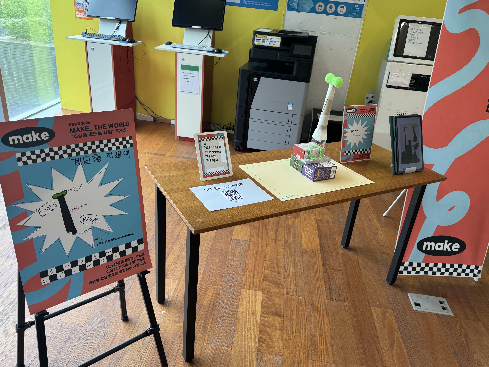
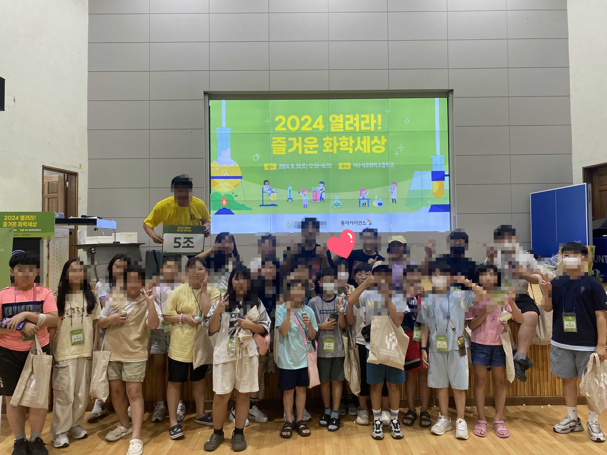

구조를 설계하고, 코드로 움직임을 만들다 KAKAO AI ROOKIE CAMP 3기 지원
지원자: 김 찬 영 (중학교 1학년)
수학적 원리로 설계하고,
실험과 코드로 증명하는 공학자
궁금한 것이 생기면 직접 만들고 실험하며 원리를 알아가는 것을 좋아합니다. 국제수리과학창의대회(IMSCC)와 FLL에 도전하며 수학과 코딩이 실제 문제 해결에 쓰이는 즐거움을 깨달았습니다.
로봇 미션이 실패할 때마다 원인을 분석하고 코드를 수정하며 포기하지 않는 끈기를 길렀습니다. 이제 기존의 로봇 제작 경험에 AI 기술을 더해 사람들에게 도움이 되는 기술을 만들고 싶습니다.

의견이 갈릴 때, 직접 실험한 데이터로 답을 찾다
FLL(FIRST LEGO League) 로봇 미션 경로 및 전략 최적화 경험
- ⚡ 갈등 상황: 고득점 도전 vs 안정적 성공 복잡한 경로로 높은 점수를 노리자는 의견과 쉬운 경로로 성공률을 높이자고 하는 의견이 맞서며 연습이 지체되었습니다.
- 📊 해결 방법: 말 대신 '성공률·시간' 기록 비교 두 경로를 직접 주행시키며 성공 횟수와 소요 시간을 측정했습니다. 데이터를 함께 확인한 뒤 '안정 미션 우선 완료 후 추가 미션 도전'으로 합의했습니다.
- 🤝 역할 이상의 기여 담당인 코딩 외에 조립이 어려운 팀원을 돕고, 주행 오차를 줄이기 위해 센서 값을 함께 점검하며 팀워크를 다졌습니다.


오류의 원인을 추적해 논리적으로 해결하는 힘
엔트리(Entry) 변수·난수 활용 게임 제작 및 중복 점수 버그 수정
방향키로 토끼를 움직여 당근을 먹는 기본 예제에 변수(속도 증가)와 난수(무작위 위치) 기능을 직접 추가해 게임의 재미를 높였습니다.
개발 중 토끼가 당근에 한 번 닿았는데 점수가 여러 번 연속으로 오르는 오류가 발생했습니다. 블록의 실행 순서를 한 줄씩 점검해 원인을 찾아내고 순서를 재설계해 해결했습니다.
→ 이동 전 짧은 순간 동안 접촉이 중복 인식됨

등하굣길 사각지대를 지키는 스마트 안전 건널목 알림이
보행자와 우회전 차량의 충돌 위험을 AI로 예측하는 능동형 안전 시스템
카메라와 초음파·거리 센서로 보행자와 우회전 차량의 위치를 실시간 포착
이동 속도와 방향 벡터를 AI가 분석해 사각지대 교차 위험도 판단
건널목 바닥 LED 점멸 및 지향성 경고음으로 보행자·운전자 동시 주의 환기
꾸준한 독서와 탐구로 쌓아 온 도전의 기록
초1부터 중1까지, 6년 연속 독서 습관과 수리·과학·SW·AI 역량의 성장 과정
수리 · 과학 · 데이터 수상
국제수리과학창의대회 금상, 과학 UCC 금상(교육감상), 공공데이터분석 우수상 등 실전 검증
단계별 영재교육 & 캠프
순천대 영재교육원 심화과정 수료 후 현재 KAIST 영재키움 및 SW·AI 창의융합캠프 등 탐구 지속
6년 연속 다독상 (초1~초6)
호기심을 책으로 해결하며 길러온 꾸준함과 문해력, 자기주도적 탐구의 원동력
- 2026 (중1) 🚀 KAIST 영재키움 프로젝트 참여 중 · KAIST 교육청 위탁 사이버영재교육 이수 중
- 2026. 11 🎮 KAIST 영재키움 전문가 멘토링 데이 참여 (게임개발자 직업군 멘토링 특강)
- 2026. 10 🔬 순천복성고등학교 과학실험캠프 참여 (과학·공학 실험 실습)
- 2026. 07 🤖 KAIST 영재키움 충청·호남권 SW·AI 창의융합캠프 참여
- 2026. 02 🎓 순천대학교 과학영재교육원 심화과정 수료
- 2025 🤖 FLL (FIRST LEGO League) 도전 및 로봇 미션 수행
- 2025. 07 📐 고려대학교 수학학력평가 최우수상 · 📚 초6 다독상 (6년 연속 달성)
- 2024. 12 🎓 순천대학교 과학영재키움교육 이수 · 📚 초5 다독상
- 2024. 09 📜 전라남도 인재증서 수상 (과학영재키움 부문)
- 2024. 08 📊 공공데이터분석활용대회 데이터분석 부문 우수상 · 🧪 열려라 즐거운 화학세상 참여
- 2024. 06 🎬 과학 UCC대회 금상 (전라남도교육감상)
- 2024. 01 💡 발명 창의인재 양성과정 10기 수료
- 2023. 10 🏆 국제수리과학창의대회(IMSCC) 금상 수상
- 2020 ~ 2023 📚 초1 ~ 초4 다독상 4년 연속 수상 (2020.12 / 2021.12 / 2022.07 / 2023.12)




